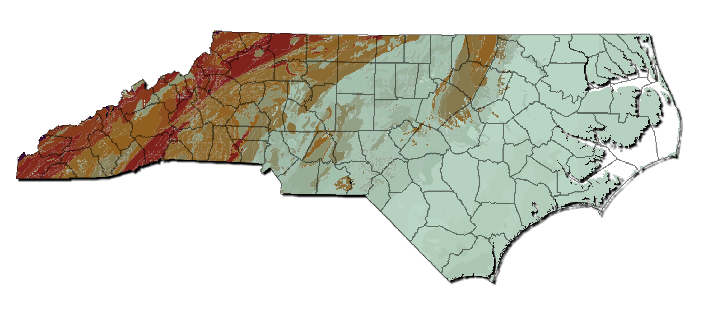

Radon is an invisible, odorless gas that comes from the dirt and rock under your home. It can build up to levels that increase your chance of lung cancer.
We measure radon in picocuries per liter (pCi/L). A pCi/L shows how much radon is in the air you breathe. The EPA says you should fix your home if it reads 4 pCi/L or higher. Even 2–3.9 pCi/L can be risky.
Radon Levels in North Carolina

High (≥4 pCi/L)
Medium (2–3.9 pCi/L)
Low (<2 pCi/L)
Testing for Radon
Testing your home tells you if radon levels are safe. You can hire a radon professional or use a do-it-yourself test kit.
About Radon Test Kits
Use a kit that’s been tested and approved by a national radon lab. The following companies make these kits:
Accustar
Air Chek
Alpha Energy Laboratories
Pro Lab
RSSI
RTCA
How to Test
Use a short-term test (at least 48 hours). If it reads ≥4 pCi/L, go to step 2.
Do a follow-up test: either a long-term kit (for a yearly average) or a second short-term kit (for quick results).
If your long-term result is ≥4 pCi/L, fix your home. If you did two short-term tests, average the two—if ≥4 pCi/L, fix your home. Aim for 2 pCi/L or lower.
Hiring a Professional
The NC Radon Program recommends a certified radon measurement professional. They can use a continuous radon monitor for more detailed hourly data and provide a full analysis of your results. Check their credentials and ask for references.